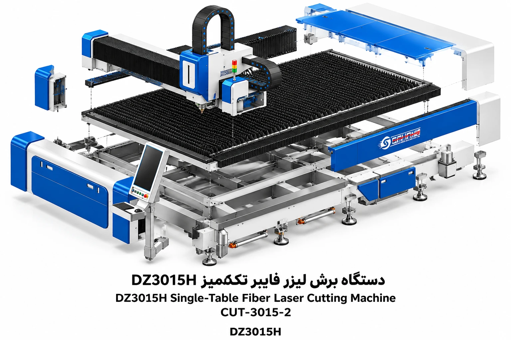

ساختار تکمیز
چیدمان یکپارچه برای نصب، نگهداری و بهرهبرداری سریع در فضای کارگاه.
SINGLE-TABLE FIBER LASER CUTTING
دقت صنعتی، ساختار یکپارچه و دسترسی سریع به تمام اجزای دستگاه؛ حالا در یک تجربهٔ تعاملی.

SCROLL TO DISASSEMBLE
اسکرول کنید تا ساختار دستگاه از حالت کامل به نمای انفجاری تبدیل شود.

ENGINEERED FOR PRODUCTION
DZ3015H برای برش پایدار ورقهای فلزی طراحی شده است؛ با دسترسی ساده به میز کار، هد برش و مجموعهٔ حرکتی.
چیدمان یکپارچه برای نصب، نگهداری و بهرهبرداری سریع در فضای کارگاه.
حرکت هماهنگ محورها برای برش تمیز و تکرارپذیر در سفارشهای صنعتی.
تأمین، راهاندازی و پشتیبانی فنی سهند لیزر در کنار شماست.
START YOUR PROJECT